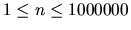

The probability of n heads in a row tossing a fair coin is 2-n. Calculate
the probability for any positive integer n (
).
A list of valid values of n (one per line).
Print a table of n and 2-n in the following for the given values
of n, using the following format:
2^-n = z.xxxe-y
where z is a nonzero decimal digit, each x is a decimal digit and
each y is a decimal integer with no leading zeros or spaces.
1
100
10000
1000000
2^-1 = 5.000e-1
2^-100 = 7.889e-31
2^-10000 = 5.012e-3011
2^-1000000 = 1.010e-301030
Miguel Revilla
2000-04-05